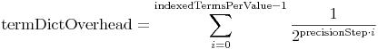
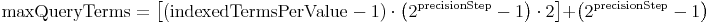

IntPoint, LongPoint, FloatPoint, DoublePoint, and
create range queries with IntPoint.newRangeQuery(),
LongPoint.newRangeQuery(),
FloatPoint.newRangeQuery(),
DoublePoint.newRangeQuery() respectively.
See PointValues for background information on Points.@Deprecated public final class LegacyNumericRangeQuery<T extends Number> extends MultiTermQuery
A Query that matches numeric values within a
specified range. To use this, you must first index the
numeric values using LegacyIntField, LegacyFloatField, LegacyLongField or LegacyDoubleField (expert: LegacyNumericTokenStream). If your terms are instead textual,
you should use TermRangeQuery.
You create a new LegacyNumericRangeQuery with the static factory methods, eg:
Query q = LegacyNumericRangeQuery.newFloatRange("weight", 0.03f, 0.10f, true, true);
matches all documents whose float valued "weight" field
ranges from 0.03 to 0.10, inclusive.
The performance of LegacyNumericRangeQuery is much better
than the corresponding TermRangeQuery because the
number of terms that must be searched is usually far
fewer, thanks to trie indexing, described below.
You can optionally specify a precisionStep
when creating this query. This is necessary if you've
changed this configuration from its default (4) during
indexing. Lower values consume more disk space but speed
up searching. Suitable values are between 1 and
8. A good starting point to test is 4,
which is the default value for all Numeric*
classes. See below for
details.
This query defaults to MultiTermQuery.CONSTANT_SCORE_REWRITE.
With precision steps of ≤4, this query can be run with
one of the BooleanQuery rewrite methods without changing
BooleanQuery's default max clause count.
See the publication about panFMP,
where this algorithm was described (referred to as TrieRangeQuery):
Schindler, U, Diepenbroek, M, 2008. Generic XML-based Framework for Metadata Portals. Computers & Geosciences 34 (12), 1947-1955. doi:10.1016/j.cageo.2008.02.023
A quote from this paper: Because Apache Lucene is a full-text
search engine and not a conventional database, it cannot handle numerical ranges
(e.g., field value is inside user defined bounds, even dates are numerical values).
We have developed an extension to Apache Lucene that stores
the numerical values in a special string-encoded format with variable precision
(all numerical values like doubles, longs, floats, and ints are converted to
lexicographic sortable string representations and stored with different precisions
(for a more detailed description of how the values are stored,
see LegacyNumericUtils). A range is then divided recursively into multiple intervals for searching:
The center of the range is searched only with the lowest possible precision in the trie,
while the boundaries are matched more exactly. This reduces the number of terms dramatically.
For the variant that stores long values in 8 different precisions (each reduced by 8 bits) that
uses a lowest precision of 1 byte, the index contains only a maximum of 256 distinct values in the
lowest precision. Overall, a range could consist of a theoretical maximum of
7*255*2 + 255 = 3825 distinct terms (when there is a term for every distinct value of an
8-byte-number in the index and the range covers almost all of them; a maximum of 255 distinct values is used
because it would always be possible to reduce the full 256 values to one term with degraded precision).
In practice, we have seen up to 300 terms in most cases (index with 500,000 metadata records
and a uniform value distribution).
You can choose any precisionStep when encoding values.
Lower step values mean more precisions and so more terms in index (and index gets larger). The number
of indexed terms per value is (those are generated by LegacyNumericTokenStream):
indexedTermsPerValue = ceil(bitsPerValue / precisionStep)
As the lower precision terms are shared by many values, the additional terms only slightly grow the term dictionary (approx. 7% forprecisionStep=4), but have a larger
impact on the postings (the postings file will have more entries, as every document is linked to
indexedTermsPerValue terms instead of one). The formula to estimate the growth
of the term dictionary in comparison to one term per value:

On the other hand, if the precisionStep is smaller, the maximum number of terms to match reduces,
which optimizes query speed. The formula to calculate the maximum number of terms that will be visited while
executing the query is:

For longs stored using a precision step of 4, maxQueryTerms = 15*15*2 + 15 = 465, and for a precision
step of 2, maxQueryTerms = 31*3*2 + 3 = 189. But the faster search speed is reduced by more seeking
in the term enum of the index. Because of this, the ideal precisionStep value can only
be found out by testing. Important: You can index with a lower precision step value and test search speed
using a multiple of the original step value.
Good values for precisionStep are depending on usage and data type:
precisionStep is given.
Integer.MAX_VALUE (see below).
TermRangeQuery. But it can be used
to produce fields, that are solely used for sorting (in this case simply use Integer.MAX_VALUE as
precisionStep). Using LegacyIntField,
LegacyLongField, LegacyFloatField or LegacyDoubleField for sorting
is ideal, because building the field cache is much faster than with text-only numbers.
These fields have one term per value and therefore also work with term enumeration for building distinct lists
(e.g. facets / preselected values to search for).
Sorting is also possible with range query optimized fields using one of the above precisionSteps.
Comparisons of the different types of RangeQueries on an index with about 500,000 docs showed
that TermRangeQuery in boolean rewrite mode (with raised BooleanQuery clause count)
took about 30-40 secs to complete, TermRangeQuery in constant score filter rewrite mode took 5 secs
and executing this class took <100ms to complete (on an Opteron64 machine, Java 1.5, 8 bit
precision step). This query type was developed for a geographic portal, where the performance for
e.g. bounding boxes or exact date/time stamps is important.
MultiTermQuery.RewriteMethod, MultiTermQuery.TopTermsBlendedFreqScoringRewrite, MultiTermQuery.TopTermsBoostOnlyBooleanQueryRewrite, MultiTermQuery.TopTermsScoringBooleanQueryRewriteCONSTANT_SCORE_BOOLEAN_REWRITE, CONSTANT_SCORE_REWRITE, field, rewriteMethod, SCORING_BOOLEAN_REWRITE| Modifier and Type | Method and Description |
|---|---|
boolean |
equals(Object o)
Deprecated.
Override and implement query instance equivalence properly in a subclass.
|
T |
getMax()
Deprecated.
Returns the upper value of this range query
|
T |
getMin()
Deprecated.
Returns the lower value of this range query
|
int |
getPrecisionStep()
Deprecated.
Returns the precision step.
|
protected TermsEnum |
getTermsEnum(Terms terms,
AttributeSource atts)
Deprecated.
Construct the enumeration to be used, expanding the
pattern term.
|
int |
hashCode()
Deprecated.
Override and implement query hash code properly in a subclass.
|
boolean |
includesMax()
Deprecated.
Returns
true if the upper endpoint is inclusive |
boolean |
includesMin()
Deprecated.
Returns
true if the lower endpoint is inclusive |
static LegacyNumericRangeQuery<Double> |
newDoubleRange(String field,
Double min,
Double max,
boolean minInclusive,
boolean maxInclusive)
Deprecated.
Factory that creates a
LegacyNumericRangeQuery, that queries a double
range using the default precisionStep LegacyNumericUtils.PRECISION_STEP_DEFAULT (16). |
static LegacyNumericRangeQuery<Double> |
newDoubleRange(String field,
int precisionStep,
Double min,
Double max,
boolean minInclusive,
boolean maxInclusive)
Deprecated.
Factory that creates a
LegacyNumericRangeQuery, that queries a double
range using the given precisionStep. |
static LegacyNumericRangeQuery<Float> |
newFloatRange(String field,
Float min,
Float max,
boolean minInclusive,
boolean maxInclusive)
Deprecated.
Factory that creates a
LegacyNumericRangeQuery, that queries a float
range using the default precisionStep LegacyNumericUtils.PRECISION_STEP_DEFAULT_32 (8). |
static LegacyNumericRangeQuery<Float> |
newFloatRange(String field,
int precisionStep,
Float min,
Float max,
boolean minInclusive,
boolean maxInclusive)
Deprecated.
Factory that creates a
LegacyNumericRangeQuery, that queries a float
range using the given precisionStep. |
static LegacyNumericRangeQuery<Integer> |
newIntRange(String field,
Integer min,
Integer max,
boolean minInclusive,
boolean maxInclusive)
Deprecated.
Factory that creates a
LegacyNumericRangeQuery, that queries a int
range using the default precisionStep LegacyNumericUtils.PRECISION_STEP_DEFAULT_32 (8). |
static LegacyNumericRangeQuery<Integer> |
newIntRange(String field,
int precisionStep,
Integer min,
Integer max,
boolean minInclusive,
boolean maxInclusive)
Deprecated.
Factory that creates a
LegacyNumericRangeQuery, that queries a int
range using the given precisionStep. |
static LegacyNumericRangeQuery<Long> |
newLongRange(String field,
int precisionStep,
Long min,
Long max,
boolean minInclusive,
boolean maxInclusive)
Deprecated.
Factory that creates a
LegacyNumericRangeQuery, that queries a long
range using the given precisionStep. |
static LegacyNumericRangeQuery<Long> |
newLongRange(String field,
Long min,
Long max,
boolean minInclusive,
boolean maxInclusive)
Deprecated.
Factory that creates a
LegacyNumericRangeQuery, that queries a long
range using the default precisionStep LegacyNumericUtils.PRECISION_STEP_DEFAULT (16). |
String |
toString(String field)
Deprecated.
Prints a query to a string, with
field assumed to be the
default field and omitted. |
getField, getRewriteMethod, getTermsEnum, rewrite, setRewriteMethodclassHash, createWeight, sameClassAs, toStringpublic static LegacyNumericRangeQuery<Long> newLongRange(String field, int precisionStep, Long min, Long max, boolean minInclusive, boolean maxInclusive)
LegacyNumericRangeQuery, that queries a long
range using the given precisionStep.
You can have half-open ranges (which are in fact </≤ or >/≥ queries)
by setting the min or max value to null. By setting inclusive to false, it will
match all documents excluding the bounds, with inclusive on, the boundaries are hits, too.public static LegacyNumericRangeQuery<Long> newLongRange(String field, Long min, Long max, boolean minInclusive, boolean maxInclusive)
LegacyNumericRangeQuery, that queries a long
range using the default precisionStep LegacyNumericUtils.PRECISION_STEP_DEFAULT (16).
You can have half-open ranges (which are in fact </≤ or >/≥ queries)
by setting the min or max value to null. By setting inclusive to false, it will
match all documents excluding the bounds, with inclusive on, the boundaries are hits, too.public static LegacyNumericRangeQuery<Integer> newIntRange(String field, int precisionStep, Integer min, Integer max, boolean minInclusive, boolean maxInclusive)
LegacyNumericRangeQuery, that queries a int
range using the given precisionStep.
You can have half-open ranges (which are in fact </≤ or >/≥ queries)
by setting the min or max value to null. By setting inclusive to false, it will
match all documents excluding the bounds, with inclusive on, the boundaries are hits, too.public static LegacyNumericRangeQuery<Integer> newIntRange(String field, Integer min, Integer max, boolean minInclusive, boolean maxInclusive)
LegacyNumericRangeQuery, that queries a int
range using the default precisionStep LegacyNumericUtils.PRECISION_STEP_DEFAULT_32 (8).
You can have half-open ranges (which are in fact </≤ or >/≥ queries)
by setting the min or max value to null. By setting inclusive to false, it will
match all documents excluding the bounds, with inclusive on, the boundaries are hits, too.public static LegacyNumericRangeQuery<Double> newDoubleRange(String field, int precisionStep, Double min, Double max, boolean minInclusive, boolean maxInclusive)
LegacyNumericRangeQuery, that queries a double
range using the given precisionStep.
You can have half-open ranges (which are in fact </≤ or >/≥ queries)
by setting the min or max value to null.
Double.NaN will never match a half-open range, to hit NaN use a query
with min == max == Double.NaN. By setting inclusive to false, it will
match all documents excluding the bounds, with inclusive on, the boundaries are hits, too.public static LegacyNumericRangeQuery<Double> newDoubleRange(String field, Double min, Double max, boolean minInclusive, boolean maxInclusive)
LegacyNumericRangeQuery, that queries a double
range using the default precisionStep LegacyNumericUtils.PRECISION_STEP_DEFAULT (16).
You can have half-open ranges (which are in fact </≤ or >/≥ queries)
by setting the min or max value to null.
Double.NaN will never match a half-open range, to hit NaN use a query
with min == max == Double.NaN. By setting inclusive to false, it will
match all documents excluding the bounds, with inclusive on, the boundaries are hits, too.public static LegacyNumericRangeQuery<Float> newFloatRange(String field, int precisionStep, Float min, Float max, boolean minInclusive, boolean maxInclusive)
LegacyNumericRangeQuery, that queries a float
range using the given precisionStep.
You can have half-open ranges (which are in fact </≤ or >/≥ queries)
by setting the min or max value to null.
Float.NaN will never match a half-open range, to hit NaN use a query
with min == max == Float.NaN. By setting inclusive to false, it will
match all documents excluding the bounds, with inclusive on, the boundaries are hits, too.public static LegacyNumericRangeQuery<Float> newFloatRange(String field, Float min, Float max, boolean minInclusive, boolean maxInclusive)
LegacyNumericRangeQuery, that queries a float
range using the default precisionStep LegacyNumericUtils.PRECISION_STEP_DEFAULT_32 (8).
You can have half-open ranges (which are in fact </≤ or >/≥ queries)
by setting the min or max value to null.
Float.NaN will never match a half-open range, to hit NaN use a query
with min == max == Float.NaN. By setting inclusive to false, it will
match all documents excluding the bounds, with inclusive on, the boundaries are hits, too.protected TermsEnum getTermsEnum(Terms terms, AttributeSource atts) throws IOException
MultiTermQueryTermsEnum.EMPTY if no
terms match). The TermsEnum must already be
positioned to the first matching term.
The given AttributeSource is passed by the MultiTermQuery.RewriteMethod to
provide attributes, the rewrite method uses to inform about e.g. maximum competitive boosts.
This is currently only used by TopTermsRewritegetTermsEnum in class MultiTermQueryIOExceptionpublic boolean includesMin()
true if the lower endpoint is inclusivepublic boolean includesMax()
true if the upper endpoint is inclusivepublic T getMin()
public T getMax()
public int getPrecisionStep()
public String toString(String field)
Queryfield assumed to be the
default field and omitted.public final boolean equals(Object o)
QueryQueryCache works properly.
Typically a query will be equal to another only if it's an instance of
the same class and its document-filtering properties are identical that other
instance. Utility methods are provided for certain repetitive code.equals in class MultiTermQueryQuery.sameClassAs(Object),
Query.classHash()public final int hashCode()
QueryQueryCache works properly.hashCode in class MultiTermQueryQuery.equals(Object)Copyright © 2000-2016 Apache Software Foundation. All Rights Reserved.